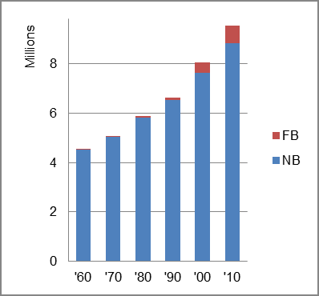

The foreign-born (FB) population increased from 21,978 in 1960 to 719,137 in 2010. That was an increase of 3172.1 percent. The foreign-born share changed from 0.5 percent to 7.5 percent.
The share of the overall population that was native-born (NB) increased by 94.4 percent.
North Carolina: Population 1960-2010 
The first chart below shows the three population change factors for three periods adjusted for annual average amounts. Domestic migration (NDM) was the largest component of population increase for the first two periods, and B-D for the most recent period.
The second chart shows the same data but with an adjustment to reflect births to immigrants shifted to NIM. In it, NIM accounted for the largest share of population increase in the most recent period.
North Carolina: Sources of Population Change 1990-2014 North Carolina: Sources of Population Change (Adjusted) 1990-2014
B-D NDM NIM B-D NDM NIM 90-'99 38.4% 55.8% 5.9% 90-'99 32.7% 55.8% 11.6% 00-'09 34.0% 50.1% 15.9% 00-'09 24.6% 50.1% 25.3% 10-'14 41.5% 35.9% 22.6% 10-'14 neg. 35.8% 61.2%